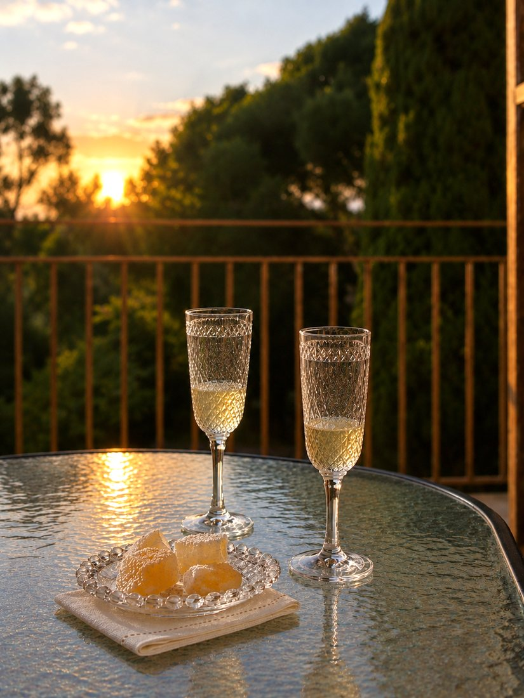

A Day Here
Morning begins quietly.
The French doors open towards the meadow and the first coffee of the day belongs to a slow start.

There is no particular need to make plans.
A walk towards the sea, time in the village, a swim, or simply an afternoon with nowhere in particular to be. Afternoons are best left unplanned.
After the beach or a walk, the house offers an easy place to return to, with the doors open while the heat of the day slowly passes.
Later, the west balcony catches the sunset through the trees.
From there, it is a short walk to Liapades square for dinner.
Local fish, shared plates, Corfiot dishes and local wine belong to late, casual evenings.
The walk back follows the village streets, with open windows and the sound of crickets carrying through the night.
The next morning may begin just as slowly, or take a completely different direction.
